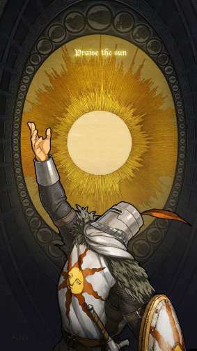
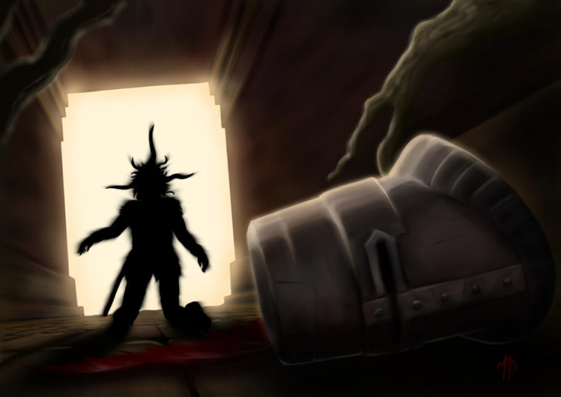

Un guerrero que porta un sol como escudo y que proviene de una lejana tierra llamada Astora. El nombre de este caballero andante es Solaire, y ésta es su historia.
Solaire de Astora es un guerrero en una cruzada personal contra la desesperanza. Formando parte de la orden de la luz Solar; nuestro caballero porta una espada recta y un escudo redondo con el emblema de su orden. También un poderoso casco, adornado con una pluma; y una armadura coronada con un peto que porta la misma imagen que el escudo. Aferrado al valor y al coraje; nuestro héroe recorre la senda del no muerto elegido con el único fin de buscar su luz, su sol, y acabar con la oscuridad que sabe que muy pronto asolaría la humanidad.
.jpg)

Un valeroso guerrero que, de una forma u otra, busca dar sentido a su vida, pero siempre con honor, lealtad y persistencia ante cualquier situación.
A medida que vayamos avanzando por el camino del no muerto elegido, nos encontraremos con Solaire en diferentes puntos de la aventura. La mayoría de veces irradiado de positividad y con el característico sentido del humor que parecen tener muchos de los personajes que asolan Lordran, el guerrero de Astora acudirá en nuestra ayuda para luchar contra el mal; derrotando dragones, gárgolas, demonios y demás bestias y leyendas con las que tantas almas se han perdido.
Un caballero que hará de vuestros encuentros un punto de tranquilidad donde poder respirar plácidamente en el infierno de cenizas que es Lordran. Una cara amiga que nos acompañará a lo largo de nuestra travesía, recordándonos su lucha por buscar el Sol, ese vestigio de esperanza para acabar con la oscuridad.


Sin embargo, el mundo de Dark Souls no destaca por tener finales felices, y han sido muchas las historias de superación y persistencia que han tenido un desenlace fatal. Parece que, de una forma u otra, todo en Lordran tiende a tornarse oscuro, y los objetivos y sueños de muchos, acaban convirtiéndose en desesperación y locura para los que llevan dicha senda. De este modo Solaire, cansado de buscar y luchar para un fin que veía cada vez más lejano, pierde la esperanza de encontrar su sol, y enloquece de tal manera que es poseído por un gusano de luz solar; desapareciendo así el poco raciocinio que le quedaba y jadeando entre las profundidades de Izalith ” Me he convertido en mi propia luz”. Un chiste macabro del destino que, una vez más, muestra la complejidad y el trasfondo de las historias y los héroes que asolan esta tierra de fuego y ceniza.